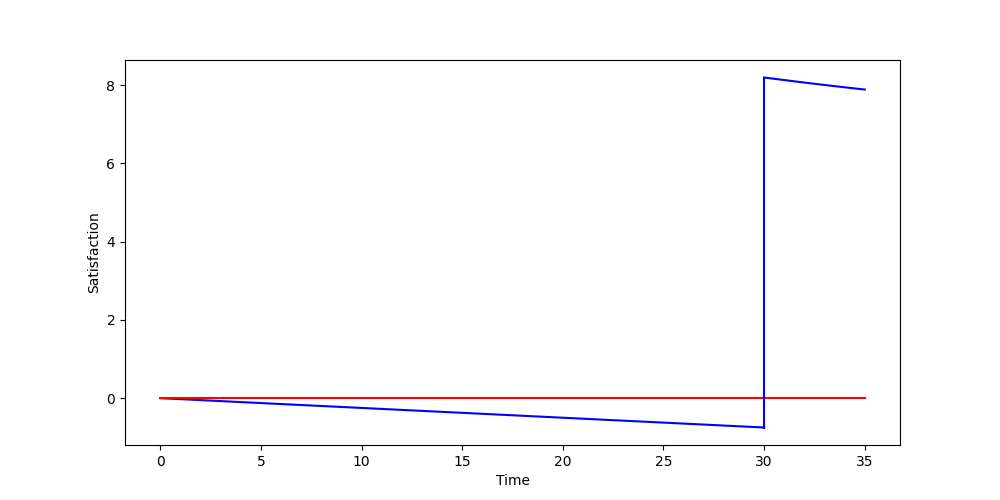
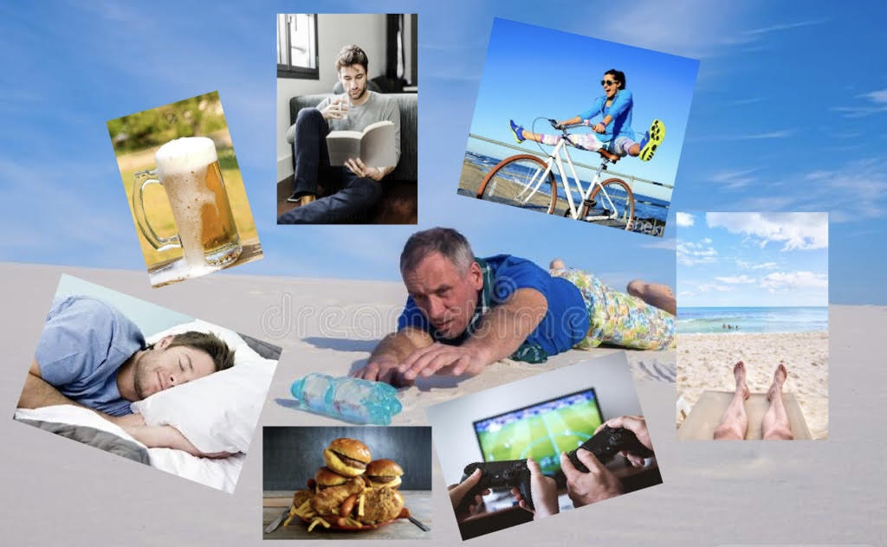

Depriving myself of various wants/needs to increase satisfaction.
The old saying goes:
You don't know what you got till it's gone.
I propose the following variant:
You don't know what you don't got till you really, really, really want it.
In plain English, objects and actions we a) want and/or need, and b) take for granted, are not fully appreciated. We can drink clean, cold water at any moment we please; we have food available at our fingertips via delivery services; we can sleep when we want; most of us have weekends off from work and enjoy that time pursuing personal hobbies. But when was the last time you really wanted one of these, yet couldn't have it? My hypothesis is simple: the longer we wait for things we want/need, the more satisfaction they bring us when our desire is finally satisfied. I expect a logarithmic return, i.e., satisfaction does not continue to increase after a certain amount of time waiting.
My life doesn't a gross amount of truly satisfying moments to it. I get excited at having a solid exercise session or reading a good book or spending time with friends. I take what I can get with minimal additional effort, which is exactly what this post discusses: increasing both the quantity and intensity of satisfying moments without too much additional effort. (The effort comes from abstaining, not performing.)
The model I visualize this with is simple:
Note the area under both curves. The negative one (curve from 0 to 30) is approximately -15, while the positive one (curve from 30 to 35) is approximately 40, giving a net positive satisfaction of +35. In plain English, the satisfaction I get from indulging in something after abstaining from it is much greater than the dissatisfaction I get from solely abstaining from it. (The numbers are random examples and depend on the type of activity, of course.)
Here I note my experiences over a few months with various deprivation types. Procedures are not rigorous nor do I care that they aren't. Hypothesis quantification values range from the following: "(not, slightly, moderately, extremely) satisfying".
I used to do 20-4 fasting: no eating for 20 hours, and then put down all my calories in that four-hour block. I trained pretty intensely at the time, so it was a decent amount of food. Eating that peanut butter oatmeal with bananas were some of the best meals I had in college, despite eating that every day. The taste never declined, nor improved—it just stayed delicious. Based on this experience, I expect food will be moderately satisfying.
Food was moderately satisfying after long bouts of not eating. I should probably try to characterize the deprivation-satisfaction curve (x-axis in hours and y-axis in satisfaction units for each variable, respectively). Focusing on each bite's taste and texture creates additional satisfaction.
Years ago I remember reading a comment that said something like "if you feel like you need something but don't what what, it's water". That's mostly held true in my experience—I can't remember a time where drinking water wasn't enjoyable or fulfilling. With this knowledge, I expect water will be extremely satisfying.
Water was extremely satisfying after not drinking anything for some time, especially after exercising and running out of water (I'm notorious amongst my friends for not bringing much water) or coming out of my workplace's factory. Chugging ice-cold, filtered water after a long ride in the Texas heat or in the cleanroom feels damn good.
My body tends to become sleepy when either a) I lie down (especially while reading), or b) it gets around my bedtime (9:00pm) and I woke up that morning around 4:00am. It's a double-whammy when I lie down in my bed to read before sleeping. When I begin to doze off while reading is when I put the book down and go to sleep. Funnily enough, as soon as I yawn while reading is when this normally happens—sleepiness jumps from a small intensity to a moderate intensity almost immediately. Sleepiness intensity increases rapidly after this point. I fall asleep in 5-15 minutes.
I expect sleep will be moderately satisfying.
Sleep was slightly satisfying after getting in bed after a long or exhausting day. The feeling of closing my eyes and knowing they would stay closed until morning was quite nice, but it was short-lived considering how quickly I fall asleep.
My average weekday (M-F) has changed significantly over the past two years, but currently (18 September 2022) goes something like:
I consider prep/commute, exercise, daily tasks, and chores necessary items, thus not free time. This gives a maximum of 2:00 hr of free time per day.
I expect free time will be moderately satisfying.
More free time was moderately satisfying. I work in a manufacturing environment, so long days and quick turnaround times are a regular thing I've experienced many times since starting work. However, on easy weeks, it's a cake walk: I'm able to leave around 4:00pm and get an extra hour out of my day. I'm also less exhausted than the hard weeks, which allows me to make the most of my personal time, as opposed to crashing on the couch and watching a movie or reading a book.
The problem with free time is that if too much is unfilled, it can become boring. For example, I spent five weekends in a row traveling out of the city, each of them sandwiching a few hard weeks of work together. On the sixth weekend when I didn't have anything planned, I didn't do anything. I lazed around the house doing nothing. I watched a few movies, read some bookmarked pages, and exercised a bit. But at the end of the weekend, I was ready to head back to work and be truly productive again. (As a side note, I think this simulates retirement.)
